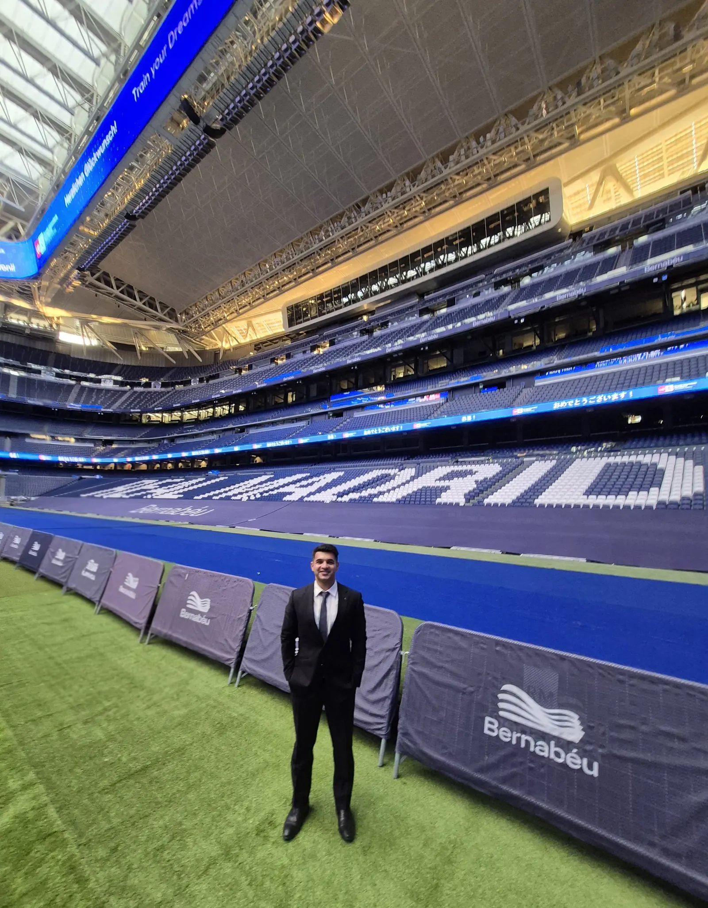
Rishiraj
Sinharay
Research EngineerBarcelona Supercomputing Center
Research Engineer in the Data and Diagnostics Team of the Earth Sciences Department at the Barcelona Supercomputing Center, building the Python data pipelines and tooling behind high-resolution climate modelling. Data engineering is the through line of my work: turning raw, high-volume data into reliable, reproducible systems. My background spans ML pipelines in elite sports, OCR-to-LLM document automation and RAG-powered analytics, but the discipline is always the same. Make the data trustworthy, then make it useful.
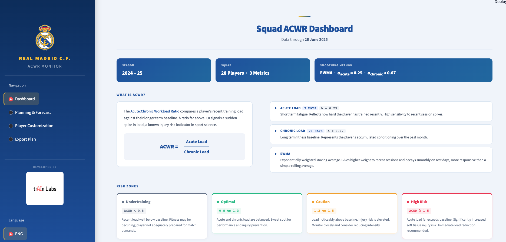
HighlightReal Madrid player load forecasting
XGBoost forecasts and ACWR injury-risk monitoring, 2026.
Career
- Barcelona Supercomputing Center2026–
- Real Madrid C.F.2026
- ComplexityAI, URJC2025–26
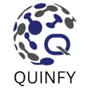
QUINFY Technology2025
Get in touch
Open to collaborations in data engineering and sports analytics.
Projects
Real Madrid player load forecasting
XGBoost forecasts and ACWR injury-risk monitoring.
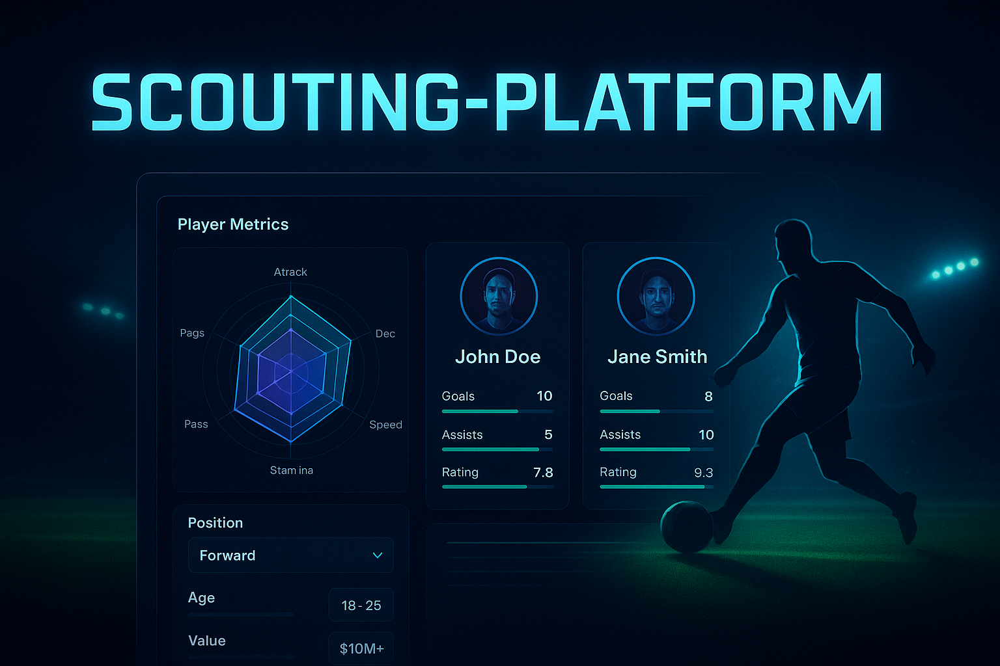
Sports, 2025Player scouting dashboard
Filter, compare and radar-chart players in Streamlit.
Sports, 2025How Aitana Bonmatí dominated the 2023 World Cup
StatsBomb event data behind a Golden Ball.
 Sports, 2025
Sports, 2025
Leicester City, the 5000-to-1 title
A data-driven look at the 2015/16 Premier League season.
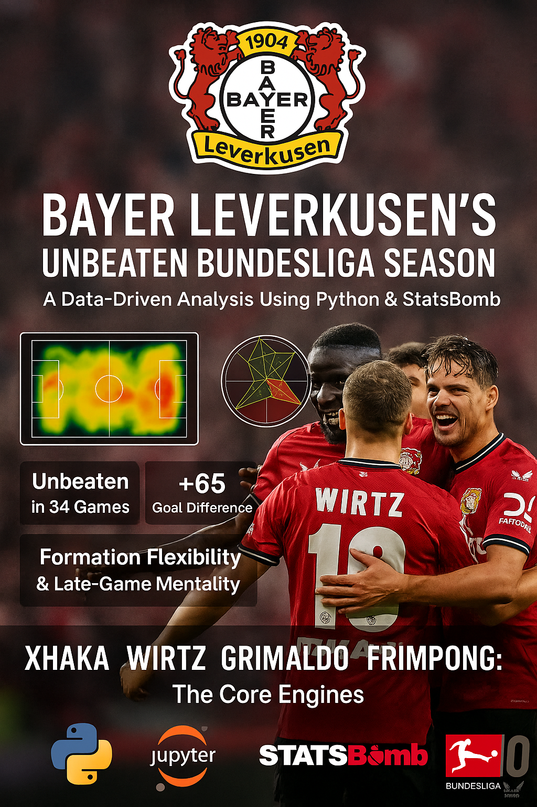
Sports, 2025Leverkusen's unbeaten Bundesliga
Xabi Alonso's 2023/24 season in shots, xG and passing.
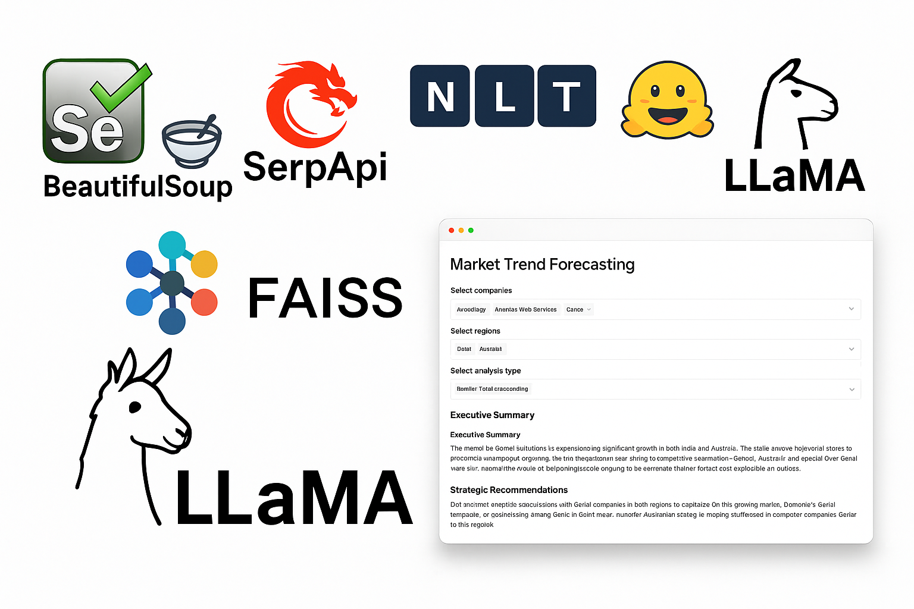
GenAI, 2025GenAI market intelligence for Dell
RAG over job listings and news with LLaMA-3.3-70B and FAISS.
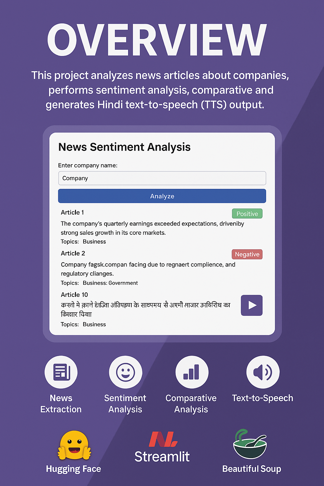
GenAI, 2025News summaries with Hindi speech
Summarisation, sentiment and text-to-speech on Hugging Face.
 Research, 2023
Research, 2023
Predictive biomarkers for FGFR therapy
Master's thesis: an ML framework for breast cancer treatment.
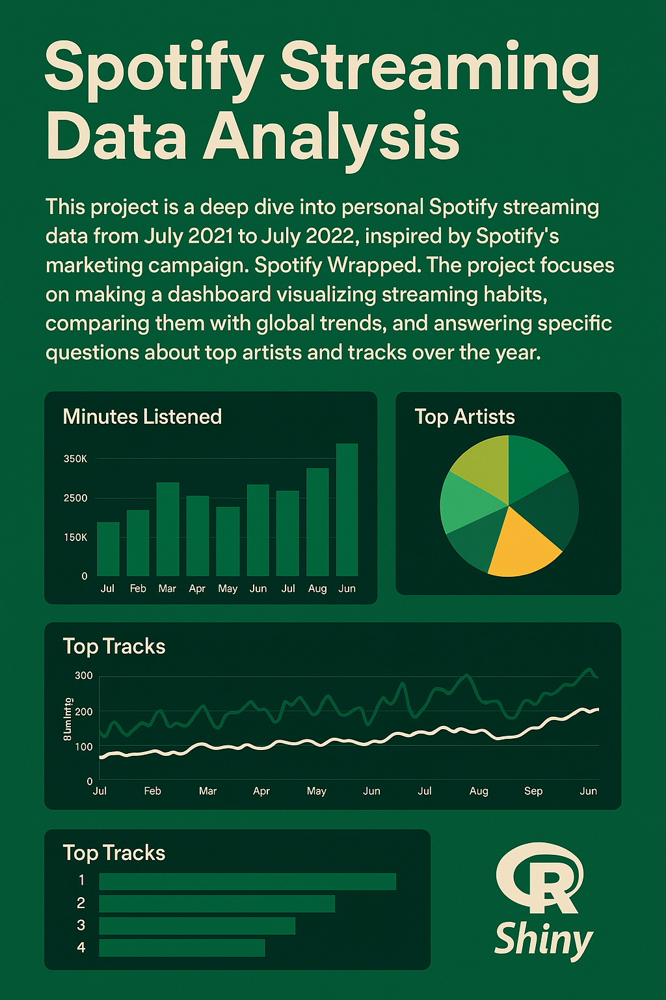
Research, 2022Spotify streaming habits
Exploratory analysis and visualisation in R.
Tools
Browser apps for working with football video and tracking data. They run locally, with nothing uploaded.
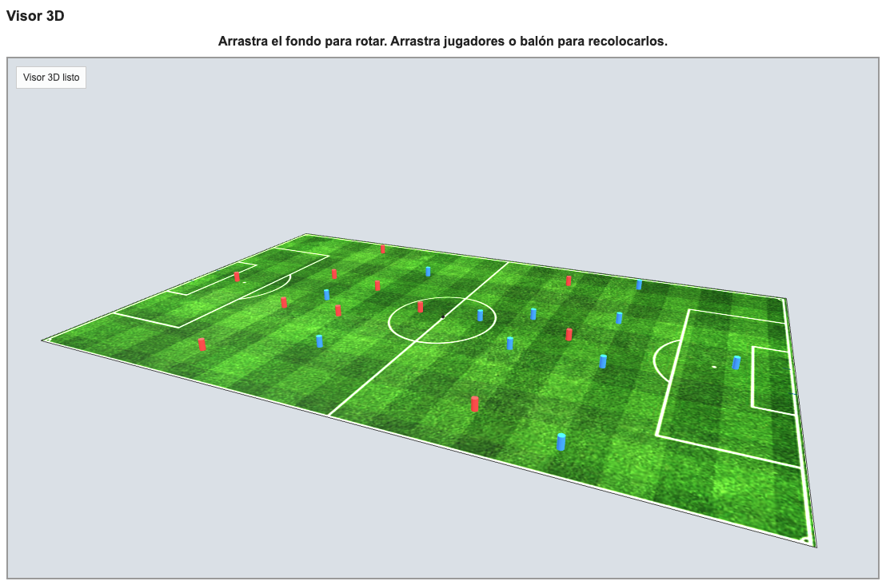
3D tracking viewer
Replay tracking data on a 2D pitch, with Voronoi control zones and a 3D drone camera. Exports to PDF, CSV and XLSX.
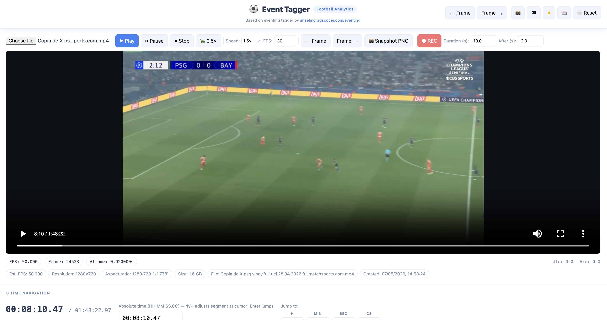
Event tagger
Tag match events frame by frame on video, log xG and xGOT, then export to Excel or a cut highlight video.
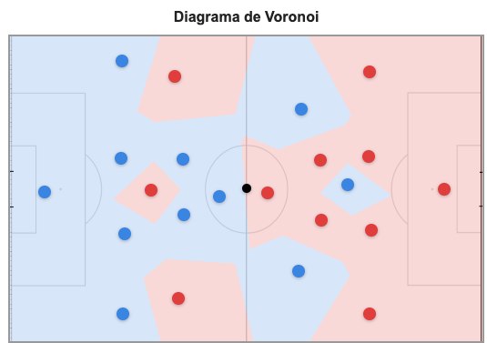
Voronoi pitch mapper
Map player and ball positions from a broadcast frame onto a pitch and see each player's territory.
Career
Transfer history
Barcelona Supercomputing CenterResearch Engineer (RE2), Barcelona
- Data and Diagnostics Team, Earth Sciences Department.
- Building the Python data pipelines and tooling behind high-resolution climate modelling.
Real Madrid C.F.Data Scientist (internship), Madrid
- Built 3 XGBoost load forecasting pipelines predicting player workload trajectories from planned session inputs, tuned with randomised search and cross-validation.
- Engineered an end-to-end ML system with GPS data cleaning, feature engineering, ACWR simulation and Streamlit deployment for real-time injury risk monitoring.
ComplexityAI, Universidad Rey Juan CarlosSports Data Scientist (internship), Madrid
- Built a multi-source football analytics platform for Liga F 2024/25 integrating Wyscout, Opta and SkillCorner data across three tracking providers.
- Engineered the FutBot goal animation pipeline: parsed Opta XML tracking data and applied homography and SVD-based perspective correction to render frame-accurate 2D pitch animations with Manim.
QUINFY TechnologyData Scientist (internship)
- Built an OCR-to-LLM microservice (Rails 8, AWS Textract, Anthropic Claude) reaching close to 95% field-level accuracy.
- Automated end-to-end document processing, cutting manual effort by more than 80%.
- Shipped secure REST APIs and webhook delivery for downstream JSON sync, with S3-backed storage via Active Storage.
Dell TechnologiesData Scientist (internship)
- Built pipelines extracting 1,500+ job listings and 300+ news articles (Selenium, BeautifulSoup, SerpAPI, PyPDF2).
- Implemented RAG with LLaMA-3.3-70B and FAISS behind a Streamlit dashboard with company and region filters and executive summaries.
- Delivered insight reports on high-synergy sectors (manufacturing, finance, HR) for leadership decisions.
Hospitality and customer serviceOperations and team lead, Melbourne
- Managed operations in high-volume venues, keeping service efficiency above 99%.
- Cut stock-outs by 30% through inventory audits and demand forecasting.
- Trained and mentored 15+ staff, improving team efficiency by 25%.
- Grew repeat business by about 20% and ran private events end to end.
DXC TechnologyAssociate Professional Software Engineer
- Supported and optimised SAP BODS ETL pipelines in production.
- Maintained the Apache Hadoop analytics platform: job health, access and incident triage.
Academy
- Master in Sports AnalyticsEscuela Universitaria Real Madrid, Universidad Europea, 2025–26
- Master of Data ScienceMonash University, Melbourne, 2022–23
- B.Tech, Electrical and Electronics EngineeringManipal Institute of Technology, 2016–20
Trophies
- Introduction to Football AnalyticsHudl StatsBomb, 2025
- Introduction to Sports AnalyticsRajasthan Royals, 2025
- Azure AI Essentials Professional CertificateMicrosoft and LinkedIn, 2025
- Power BIInternshala, 2025
- Generative AI FundamentalsDatabricks
- Azure Fundamentals (AZ-900)Microsoft, 2021
- ITIL 4 FoundationAXELOS
- GPT-4 Foundations: Building AI-Powered AppsLinkedIn Learning
- TensorFlow: Working with NLPLinkedIn Learning
- Introduction to Generative AI with GPTLinkedIn Learning
- Hands-On Introduction: Data EngineeringLinkedIn Learning
- Data Analytics and Visualization Job SimulationAccenture North America
Contact
Roles, collaborations or a chat about football data. I reply within a few days.
- Based in
- Barcelona, Spain
- Elsewhere